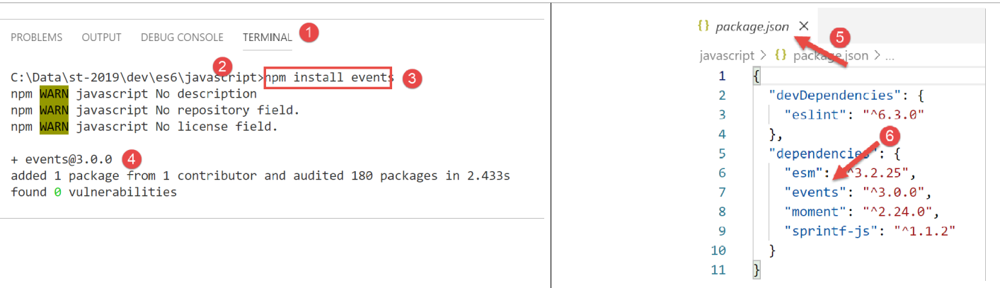

11. Programación basada en eventos y funciones asíncronas

Una función asíncrona es una función cuya ejecución se inicia pero cuyo resultado no se espera. Cuando se completa la ejecución, la función asíncrona emite un evento y transmite su resultado a través de ese evento.
Este modo de funcionamiento se adapta bien a la ejecución dentro de un navegador web. De hecho, una aplicación que se ejecuta dentro de un navegador es una aplicación dirigida por eventos: la aplicación reacciona a eventos, principalmente desencadenados por el usuario (clics, movimientos del ratón, entrada de texto, etc.). Las aplicaciones JavaScript que se ejecutan en un navegador interactúan con servicios externos a través del protocolo HTTP. Las funciones HTTP nativas de JavaScript son asíncronas: se inician y la recepción de una respuesta del servicio externo solicitado se señala mediante un evento que se añade al conjunto de eventos gestionados por la aplicación.
Los siguientes scripts serán ejecutados por [node.js] y no por un navegador. [node.js] también tiene un modelo de ejecución basado en eventos:
- [node.js], al igual que un navegador, utiliza un bucle de eventos para ejecutar un script;
- la ejecución del código principal del script es el primer evento ejecutado;
- si este código principal ha lanzado tareas asíncronas, la ejecución continúa hasta que estas tareas asíncronas finalizan. Estas tareas emiten un evento cuando finalizan. Estos eventos se ponen en cola en el bucle de eventos;
- el script principal debe suscribirse a estos eventos si quiere recuperar los resultados de las acciones asíncronas;
- el script no finaliza hasta que se han procesado todos los eventos que ha emitido;
11.1. script [async-01]
El siguiente script demuestra el comportamiento de un script que contiene una acción asíncrona.
'use strict';
// imports
import moment from 'moment';
import { sprintf } from 'sprintf-js';
// start
const scriptStart = moment(Date.now());
console.log("[start of script],", time());
// setTimeout sets a timer for 1000 ms (2nd parameter) and immediately returns the timer ID
// when the timer has elapsed 1000 ms, it emits an event that is queued by the runtime
// When the event is processed by the runtime, the function (first parameter) is executed
setTimeout(function () {
// this code will be executed when the timer reaches 0
console.log("[end of setTimeout asynchronous action],", time(scriptStart));
}, 1000)
// will be displayed before the message from the timer's internal function
console.log("[end of main script code],", time(scriptStart));
// Utility function to display time and duration
function time(start) {
// current time
const now = moment(Date.now());
// time formatting
let result = "time=" + now.format("HH:mm:ss:SSS");
// Do we need to calculate a duration?
if (start) {
const duration = now - start;
const milliseconds = duration % 1000;
const seconds = Math.floor(duration / 1000);
// Format time + duration
result = result + sprintf(", duration= %s seconds and %s milliseconds", seconds, milliseconds);
}
// result
return result;
}
- línea 4: importamos la [momento] biblioteca para formatear fechas (línea 27);
- línea 5: importar la [sprintf-js] biblioteca para formatear duraciones (línea 34);
- línea 8: registramos la hora de inicio del script'
- línea 9: lo mostramos utilizando el [tiempo] método de las líneas 20-34;
- líneas 14-17: la función [setTimeout] tiene dos parámetros (f, duración): f es una función que se ejecuta cuando han transcurrido [duration] milisegundos;
- línea 14: cuando se ejecuta el script, se ejecuta la función [setTimeout] :
- línea 17: se inicia un temporizador de 1000 ms y comienza la cuenta atrás hasta que finalmente llega a 0. La función [setTimeout] se completa en cuanto se inicializa el temporizador y comienza la cuenta atrás. No espera a que termine la cuenta atrás. Devuelve un número de identificación para el temporizador utilizado, y la ejecución pasa a la siguiente instrucción, la línea 20. Aquí, el resultado de does not wait for the countdown to end. It returns an ID number for the timer used, and execution moves on to the next instruction, line 20. Here, the result of [setTimeout] no se utiliza;
- línea 16: este mensaje se mostrará al final del retardo de 1000 ms de la [setTimeout] función;
- líneas 15-16: la función f, primer parámetro de la función [setTimeout] , se ejecutará al final del retardo de 1000 ms. A continuación, se mostrará el mensaje de la línea 16;
- línea 20: este mensaje se mostrará antes que el de la línea 16;
Tiempo función:
- línea 23: la función acepta un parámetro opcional [tiempo], que es la hora de inicio de una operación cuya duración debe mostrar;
- líneas 25-27: se calcula y formatea la hora actual;
- línea 29: si el [inicio] parámetro está presente, entonces debe calcularse una duración;
- línea 30: la duración de la operación. Esto resulta en un número de milisegundos;
- líneas 31-32: este número de milisegundos se desglosa en segundos y milisegundos;
- línea 34: la duración se añade al tiempo;
Ejecución
[Running] C:\myprograms\laragon-lite\bin\nodejs\node-v10\node.exe -r esm "c:\Data\st-2019\dev\es6\javascript\async\async-01.js"
[start of script], time=09:26:40:238
[end of main script code], time=09:26:40:246, duration= 0 second(s) and 11 milliseconds
[end of async action setTimeout], time=09:26:41:249, duration= 1 second(s) and 14 milliseconds
[Done] exited with code=0 in 1.672 seconds
- línea 4, podemos ver que la acción asíncrona [setTimeout] terminó aproximadamente 1 segundo después del final del código principal del script'
- Línea 6: El tiempo mostrado en la línea 3 es el tiempo en el que termina el código principal. Si el código principal ha iniciado tareas asíncronas, el script no estará completo hasta que se hayan ejecutado todas las tareas asíncronas. La duración mostrada en la línea 6 es el tiempo total de ejecución del script (código principal + tareas asíncronas);
La función [setTimeout] nos permitirá simular tareas asíncronas en un [node.js] entorno. De hecho, la función [setTimeout] se comporta como una tarea asíncrona:
- devuelve un resultado inmediatamente-en este caso, un ID de temporizador-utilizando el mecanismo estándar de la función (return);
- puede más adelante (que aún no es el caso anterior) devolver otros resultados vía eventos que luego son procesados por el [node.js] bucle de eventos;
- en la mayoría de los casos que siguen, habrá dos eventos de este tipo:
- un evento que podría llamarse [éxito], que será emitido por la tarea asíncrona que haya completado con éxito su operación. Un dato -el resultado de la tarea- se asocia al evento emitido;
- un evento que podría llamarse [fallo], que es emitido por la tarea asíncrona que no ha podido completar su tarea. Al evento emitido se le asocia un dato, normalmente un objeto que describe el error. Los posibles errores con una tarea asíncrona de Internet, por ejemplo, serían "red no disponible", "máquina del servidor no existe", "tiempo de espera excedido", ...
- el código principal que lanzó una tarea asíncrona puede suscribirse a los eventos que esta tarea probablemente emita. Cuando se emite uno de ellos, el código principal recibe una notificación y puede desencadenar la ejecución de una función específica diseñada para gestionar el evento. Esta función recibe como parámetro los datos que la tarea asíncrona asoció al evento emitido;
11.2. script [async-02]
En este script, la función asíncrona [setTimeout] emitirá eventos para comunicar datos al código que se haya suscrito a ellos.
Acceder a [node.js] events requiere librerías adicionales. Elegimos la [events] librería, que instalamos mediante [npm]:

El [async-02] script es el siguiente:
'use strict';
// Asynchronous functions can return a result by emitting an event
// the main code can retrieve these results by subscribing to the emitted events
// imports
import moment from 'moment';
import { sprintf } from 'sprintf-js';
import EventEmitter from 'events';
// start
const scriptStart = moment(Date.now());
console.log("[start of script],", time());
// an event emitter
const eventEmitter = new EventEmitter();
// setTimeout sets a timer for 1000 ms (2nd parameter) and immediately returns the timer ID
// when the timer has elapsed 1000 ms, it emits an event that is queued by the runtime
// When the event is processed by the runtime, the function (first parameter) is executed
setTimeout(function () {
// This code will be executed when the timer reaches 0
console.log("[setTimeout, end of 1-second timer],", time(scriptStart));
// we emit an event to indicate that a result is available
eventEmitter.emit("timer1Success", { success: 4 });
// We emit another event to indicate that another result is available
eventEmitter.emit("timer1Failure", { failure: 6 });
}, 1000)
// subscribe to the [timer1Success] event
eventEmitter.on('timer1Success', (result) => {
console.log(sprintf("The timer's asynchronous function returned the result [%j], %s, via the [timer1Success] event", result, time(scriptStart)));
});
// subscribe to the [timer1Failure] event
eventEmitter.on('timer1Failure', (result) => {
console.log(sprintf("The timer's asynchronous function returned the result [%j], %s, via the [timer1Failure] event", result, time(scriptStart)));
});
// will be displayed before the messages from events emitted by the function associated with [timer1]
console.log("[end of main script code],", time(scriptStart));
// utility for displaying time and duration
function time(start) {
// current time
const now = moment(Date.now());
// time formatting
let result = "time=" + now.format("HH:mm:ss:SSS");
// Do we need to calculate a duration?
if (start) {
const duration = now - start;
const milliseconds = duration % 1000;
const seconds = Math.floor(duration / 1000);
// Format time + duration
result = result + sprintf(", duration= %s seconds and %s milliseconds", seconds, milliseconds);
}
// result
return result;
}
Comentarios
- línea 9: importamos la [EventEmitter] clase de la [events] biblioteca. Esto es nuevo: hasta ahora, sólo habíamos importado objetos literales y funciones;
- línea 15: creamos un [node.js] emisor de eventos instanciando la [EventEmitter] clase con la [new] palabra clave;
- Líneas 20-27: la función asíncrona [setTimeout]. Emitirá dos eventos cuando se ejecute:
- línea 24, el [timer1Success] evento con el objeto {success: 4} como valor asociado;
- línea 26, el [timer1Failure] evento con el objeto {failure: 6} como valor asociado;
- una función asíncrona puede emitir tantos eventos como quiera. Antes hemos mencionado que lo más habitual es que emita uno de los dos eventos [éxito, fallo], no los dos como estamos haciendo aquí;
- línea 20: la ejecución de [setTimeout] es instantánea: se establece un temporizador y se devuelve su ID al código de llamada. Los eventos se emitirán más tarde, en este caso 1 segundo después;
- desencadenar eventos no tiene sentido si no hay código que los maneje cuando ocurren. Por eso el código principal debe suscribirse a ambos eventos [timer1Success, timer1Failure] si quiere manejarlos, concretamente para recuperar los datos asociados a estos eventos;
- Líneas 30-32: El código principal se suscribe al [timer1Success] evento. Cuando el [node.js] event listener procese este evento, llamará a la función que es el segundo parámetro del [eventEmitter.on] método, pasándole los datos (aquí llamados [result]) asociados al [timer1Success] evento;
- línea 31: la función manejadora del evento mostrará el JSON de los datos asociados al evento, así como la hora actual;
- líneas 35-37: utilizando código similar, el código principal se suscribe al [timer1Failure] evento;
- La suscripción a un evento (primer parámetro) no ejecuta inmediatamente el código de la [callback] función (segundo parámetro). Esta función sólo se ejecutará después de que se haya producido el evento;
- línea 40: el código principal del script ha terminado, pero el script en sí no, ya que el código principal lanzó una tarea asíncrona. El script global no terminará hasta que esta tarea asíncrona haya finalizado;
Esto es lo que muestran los resultados:
[Running] C:\myprograms\laragon-lite\bin\nodejs\node-v10\node.exe -r esm "c:\Data\st-2019\dev\es6\javascript\async\async-02.js"
[start of script], time=09:34:58:909
[end of main script code], time=09:34:58:916, duration= 0 second(s) and 10 milliseconds
[setTimeout, end of 1-second timer], time=09:34:59:929, duration= 1 second(s) and 23 milliseconds
the timer's asynchronous function returned the result [{"success":4}], time=09:34:59:931, duration= 1 second(s) and 25 milliseconds, via the [timer1Success] event
The timer's asynchronous function returned the result [{"failure":6}], time=09:34:59:932, duration= 1 second(s) and 26 milliseconds, via the [timer1Failure] event
[Done] exited with code=0 in 1.627 seconds
- línea 3: fin del código principal 10 ms después de iniciarse el script;
- línea 4: inicio de la función encapsulada en el temporizador de 1000 ms, aproximadamente 1 segundo después del inicio del script;
- línea 5: procesamiento del ['timer1Success'] evento, 2 ms después;
- línea 6: procesamiento del ['timer1Failure'] evento, 1 ms más tarde que el ['timer1Success'] evento;
- línea 8: fin del script global con una duración total de 1,627 segundos;
11.3. script [async-03]
El siguiente script demuestra otro aspecto del [node.js] bucle de eventos:
- el bucle ejecuta los eventos uno tras otro, generalmente en el orden en que llegan. Algunos sistemas operativos asignan prioridades a los eventos, que se procesan por orden de prioridad en lugar de por orden de llegada;
- el bucle ejecuta sólo un evento a la vez. El siguiente evento se procesa sólo después de que el anterior haya terminado. Por lo tanto, en un sistema dirigido por eventos, debes evitar escribir código que monopolice el procesador durante largos periodos, ya que los eventos no se procesarán cuando se produzcan, sino más tarde, cuando el bucle de eventos llegue a ellos. Esto da como resultado una aplicación poco "responsive";
El script [async-03] demuestra un ejemplo de este fenómeno:
'use strict';
// Asynchronous functions can return a result by emitting an event
// the main code can retrieve these results by subscribing to the emitted events
// imports
import moment from 'moment';
import { sprintf } from 'sprintf-js';
import EventEmitter from 'events';
// start
const scriptStart = moment(Date.now());
console.log("[start of script],", time());
// an event emitter
const eventEmitter = new EventEmitter();
// setTimeout sets a timer for 1000 ms (second parameter) and immediately returns the timer's ID
// When the timer has elapsed 1000 ms, it emits an event that is queued by the runtime
// When the event is processed by the runtime, the function (first parameter) is executed
setTimeout(function () {
// This code will be executed when the timer reaches 0
console.log("[setTimeout, end of 1-second timer],", time(scriptStart));
// we emit an event to indicate that a result is available
eventEmitter.emit("timer1Success", { success: 4 });
// We emit another event to indicate that another result is available
eventEmitter.emit("timer1Failure", { failure: 6 });
}, 1000)
// subscribe to the [timer1Success] event
eventEmitter.on('timer1Success', (result) => {
console.log(sprintf("The timer's asynchronous function returned the result [%j], %s, via the [timer1Success] event", result, time(scriptStart)));
});
// subscribe to the [timer1Failure] event
eventEmitter.on('timer1Failure', (result) => {
console.log(sprintf("The timer's asynchronous function returned the result [%j], %s, via the [timer1Failure] event", result, time(scriptStart)));
});
// A somewhat intensive synchronous code that prevents the main code from finishing before [timer1] ends
for (let i = 0; i < 1000000; i++) {
for (let j = 0; j < 10000; j++) {
i + i ^ 2 + i ^ 3;
}
}
// will be displayed before the messages from the events emitted by the function associated with [timer1]
console.log("[end of script],", time(startScript));
// utility for displaying time and duration
function time(start) {
...
}
Comentarios
- Este código es del ejemplo anterior [async-02], al que se le han añadido las líneas 39-44;
- Líneas 20-27: La función [setTimeout] ha sido programada para ejecutar una función asíncrona interna tras un retardo de un segundo. Una vez transcurrido este segundo, la ejecución de la función asíncrona del temporizador no se produce inmediatamente: se coloca un evento en el bucle de ejecución para solicitarla. Si el bucle de ejecución está ocupado procesando otro evento, la ejecución de la función asíncrona del temporizador tendrá que esperar;
- líneas 20-27: en cuanto la [setTimeout] función ha ajustado su temporizador para un retardo de un segundo, libera el procesador y devuelve el control al código de llamada. El código de llamada continúa con las líneas 30-37, que son suscripciones a eventos y tienen un tiempo de ejecución insignificante;
- el código principal continúa con las líneas 40-44, que forman un bucle de 1.010 iteraciones. Este código estará en ejecución cuando el temporizador dispare su evento "fin de retardo de 1 segundo". Este evento se coloca entonces en el bucle de eventos, pero debe esperar a que el código del script principal termine de ejecutarse antes de que pueda ser procesado;
- Línea 47: final del código principal del script. Es después de esta visualización final cuando se puede procesar el evento de fin de temporizador y ejecutar la función asíncrona interna de [setTimeout] ;
El script produce los siguientes resultados:
[Running] C:\myprograms\laragon-lite\bin\nodejs\node-v10\node.exe -r esm "c:\Data\st-2019\dev\es6\javascript\async\async-03.js"
[start of script], time=08:55:02:665
[end of main script code], time=08:55:11:789, duration= 9 seconds and 131 milliseconds
[setTimeout, end of 1-second timer], time=08:55:11:794, duration= 9 seconds and 136 milliseconds
the timer's asynchronous function returned the result [{"success":4}], time=08:55:11:794, duration= 9 seconds and 136 milliseconds, via the [timer1Success] event
The timer's asynchronous function returned the result [{"failure":6}], time=08:55:11:794, duration= 9 seconds and 136 milliseconds, via the [timer1Failure] event
[Done] exited with code=0 in 9.796 seconds
Comentarios
- línea 3: vemos que el código principal del script tardó 9 segundos en ejecutarse. Cualquier evento que ocurriera durante este tiempo se puso en cola en el bucle de eventos;
- línea 4: vemos que el [timer end] evento se procesó 5 ms después de que terminara el código principal. Se emitió aproximadamente 1 s después de que comenzara el script pero tuvo que esperar 8 s adicionales para ser procesado finalmente;
La clave que se extrae de este ejemplo es que en un sistema dirigido por eventos, el código nunca debe ocupar el procesador durante mucho tiempo. Si tienes código síncrono que tarda mucho en ejecutarse, debes encontrar una forma de dividirlo en tareas asíncronas más cortas que señalen su finalización con un evento.
11.4. script [async-04]
El [async-04] script demuestra otro mecanismo, llamado [Promise], una promesa de un resultado. Este mecanismo evita la necesidad de manejar explícitamente [node.js] eventos. Se maneja de forma implícita, por lo que el desarrollador puede ignorar la existencia de estos eventos. Entenderlos, sin embargo, ayudará al desarrollador a comprender mejor cómo [Promise] funciona, lo cual es complejo a primera vista.
El tipo [Promise] es una clase de JavaScript. Su constructor acepta como parámetro una función asíncrona, a la que pasa dos parámetros llamados tradicionalmente [resolver] y [rechazar]. Podrían tener nombres diferentes;
- el [Promise] constructor hace dos cosas:
- crea un evento para desencadenar la ejecución de la función [function(resolve, reject)] que se le ha pasado como parámetro, pero no espera su resultado y devuelve inmediatamente un [Promise] objeto al código llamador. Este objeto puede tener cuatro estados:
- [pendiente]: la acción asíncrona que devolvió la [promesa] aún no se ha completado;
- [cumplido]: la acción asíncrona que devolvió la [Promesa] ha finalizado correctamente;
- [rejected]: la acción asíncrona que ha devuelto el [Promise] ha fallado;
- [resuelto]: la acción asíncrona que devolvió la [Promesa] ha finalizado;
- crea un evento para desencadenar la ejecución de la función [function(resolve, reject)] que se le ha pasado como parámetro, pero no espera su resultado y devuelve inmediatamente un [Promise] objeto al código llamador. Este objeto puede tener cuatro estados:
Cuando el constructor devuelve su resultado, el [Promise] objeto creado se encuentra en el [pending] estado, a la espera de los resultados de la función asíncrona;
- (continuación)
- la tarea asíncrona de las líneas 2-5 se lanza inmediatamente. Las tareas asíncronas suelen ser tareas de entrada/salida que se descomponen de la siguiente manera:
- ejecución de código síncrono para iniciar la operación de E/S con otro componente, como un servidor remoto;
- esperando respuesta de ese componente;
- procesamiento de esta respuesta;
- la tarea asíncrona de las líneas 2-5 se lanza inmediatamente. Las tareas asíncronas suelen ser tareas de entrada/salida que se descomponen de la siguiente manera:
La fase 2 -esperar al componente externo- es la que consume más recursos. En lugar de esperar:
- la recepción de los datos solicitados al componente externo se señalará mediante un evento;
- en el código síncrono que sigue a la fase 1 (línea 7 del código de ejemplo), nos suscribiremos a este evento y luego, en algún momento, volveremos al [node.js] bucle de eventos. A continuación, se procesará el siguiente evento de la lista de eventos pendientes;
- durante la fase 2, hay ejecución paralela pero en diferentes dispositivos:
- el procesador para el bucle de eventos;
- un componente externo (disco, base de datos, servidor remoto) para recuperar los datos solicitados;
- Al final de la fase 2, una vez que la operación de E/S haya obtenido los datos que solicitó, se activará un evento para indicar que el resultado de la E/S está disponible. Este evento se unirá entonces a los demás en la cola de eventos;
- cuando llegue su turno, será procesado. A continuación, se ejecutará la función asociada a este evento (línea 7 del código de ejemplo);
Este modo de funcionamiento ayuda a evitar el tiempo de inactividad: la situación en la que el procesador espera una respuesta de un dispositivo que es más lento que él mismo;
- (continuación)
- una vez que la tarea asíncrona de las líneas 2 y 5 ha sido lanzada y ha completado su trabajo, puede devolver un resultado al código llamante utilizando las dos funciones [resolver, rechazar] que el [Promise] constructor le pasó como parámetros. La convención es la siguiente:
- la tarea asíncrona señala el éxito a través de [resolver(resultado)]. Esto equivale a añadir un evento al [node.js] bucle de eventos que podría llamarse [resolved], con [result] como los datos asociados;
- la tarea asíncrona señala un fallo a través de [reject(error)]. Esto equivale a añadir un evento al [node.js] bucle de eventos que podría llamarse [rejected], con [error] como los datos asociados-típicamente un objeto que detalla el error que se produjo;
- por tanto, el código de llamada debe suscribirse a estos dos eventos para ser notificado cuando el resultado de la función asíncrona esté disponible;
- una vez que la tarea asíncrona de las líneas 2 y 5 ha sido lanzada y ha completado su trabajo, puede devolver un resultado al código llamante utilizando las dos funciones [resolver, rechazar] que el [Promise] constructor le pasó como parámetros. La convención es la siguiente:
Después de que la tarea asíncrona encapsulada en el [Promise] haya terminado de ejecutarse, el estado del [promise] objeto devuelto por el [Promise(...)] constructor cambia:
- el [resuelto]evento cambia su estado de [pendiente] a [resuelto];
- el [rechazado] evento lo cambia del [pendiente] estado a [rechazado];
La suscripción a los [resueltos] y [rechazados] eventos de la tarea asíncrona se realiza mediante métodos de la [Promise] clase con la siguiente sintaxis:
promise.then(f1).catch(f2).finally(f3);
donde:
- f1 es una función que se ejecuta cuando el [promesa] estado cambia de [pendiente] a [resuelto], es decir, cuando la tarea asíncrona ha completado con éxito su trabajo. Recibe el valor [resultado] como parámetro, pasado por la [resolver(resultado)] declaración de la tarea asíncrona;
- f2 es una función que se ejecuta cuando el estado de [promesa] cambia de [pendiente] a [rechazado], es decir, cuando la tarea asíncrona no ha podido completar su trabajo. Recibe el valor [error] como parámetro, pasado por el [reject(error)] statement de la tarea asíncrona;
- f3 es una función que se ejecuta después de que se hayan ejecutado los [then] o [catch] métodos, por lo que siempre se ejecuta. No recibe parámetros;
Esta sintaxis oculta completamente los eventos a los que nos suscribimos. Sin embargo, es una suscripción, y al igual que la del ejemplo anterior, no ejecuta inmediatamente las funciones [f1, f2, f3]. Éstas se ejecutarán -o no- cuando se produzca uno de los eventos [resuelto, rechazado] a los que estamos suscritos.
El [async-04] script demuestra este mecanismo:
'use strict';
// it is possible to obtain the results (success, failure) of an asynchronous function
// without explicitly using events, thanks to the [Promise] class
// this class implicitly uses events, but these are not visible in the code
// imports
import moment from 'moment';
import { sprintf } from 'sprintf-js';
// start
const scriptStart = moment(Date.now());
console.log("[script start],", time(startScript));
// Define an asynchronous task using a Promise
// The asynchronous task is the constructor parameter [Promise]
const startPromise1 = moment(Date.now());
const promise1 = new Promise(function (resolve) {
// log
console.log("[start of promise1's asynchronous function],", time(startPromise1));
// asynchronous code
setTimeout(function () {
console.log("[end of promise1's asynchronous function],", time(startPromise1));
// the asynchronous task returns a result using the [resolve] function
// the promise is then fulfilled
resolve('[success]');
}, 1000)
});
// we can find out the result of the promise [promise1]
// once it has been resolved or rejected
// the following statement subscribes to the [resolved] event via the [then] method
// and to the [rejected] event via the [catch] method
// the [finally] method is executed whether after a then or a catch
promise1.then(result => {
// if the promise succeeds [resolved event]
console.log(sprintf("[promise1.then], %s, result=%s", time(startPromise2), result));
}).catch(result => {
// error case [evt rejected]
console.log(sprintf("[promise1.catch], %s, result=%s", time(startPromise2), result));
}).finally(() => {
// executed in all cases
console.log("[promise1.finally]", time(startPromise1));
});
// Defining an asynchronous task using a promise [Promise]
const startPromise2 = moment(Date.now());
const promise2 = new Promise(function (resolve, reject) {
// log
console.log("[start of promise2 asynchronous function],", time(startPromise1));
// asynchronous task
setTimeout(function () {
console.log("[end of Promise2's asynchronous function],", time(startPromise2));
// the asynchronous task returns a result using the [reject] function
// the promise is then rejected
reject('[failure]');
}, 2000)
});
// We can determine the result of the promise [promise2]
// once it has been resolved or rejected
promise2.then(result => {
// if the promise is fulfilled [evt resolved]
console.log(sprintf("[promise2.then], %s, result=%s", time(startPromise2), result));
}).catch(result => {
// error case [evt rejected]
console.log(sprintf("[promise2.catch], %s, result=%s", time(startPromise2), result));
}).finally(() => {
// executed in all cases
console.log(sprintf("[promise2.finally], %s", time(startPromise2)));
});
// will be displayed before the messages from the asynchronous functions and those from the associated events
console.log("[end of main script code],", time(startScript));
// utility
function time(start) {
// current time
const now = moment(Date.now());
// time formatting
let result = "time=" + now.format("HH:mm:ss:SSS");
if (start) {
const duration = now - start;
const milliseconds = duration % 1000;
const seconds = Math.floor(duration / 1000);
// format duration
result = result + sprintf(", duration= %s seconds and %s milliseconds", seconds, milliseconds);
}
// result
return result;
}
Comentarios
- líneas 18-28: creación de una [Promesa promise1]. Su función asíncrona devuelve su resultado mediante un evento al cabo de un segundo. Una vez lanzada esta operación asíncrona (se inicia el temporizador), no esperamos a que devuelva su resultado y pasamos inmediatamente al código de la línea 35;
- líneas 35-44: nos suscribimos a los dos eventos [resuelto, rechazado] que puede emitir la función asíncrona interna de [promesa1] ;
- líneas 46-71: Repetimos la misma secuencia de código anterior para una segunda promesa [promesa2];
- Línea 74: El cuerpo principal del script ha terminado de ejecutarse, pero el script en su conjunto no, porque se han iniciado dos acciones asíncronas. Volvemos al bucle de eventos, donde en algún momento se producirá uno de los eventos [resuelto, rechazado] para las promesas [promesa1, promesa2] . A continuación, se tratará;
- entonces volvemos al bucle de eventos. Y allí, el segundo evento [resuelto, rechazado] de las promesas [promesa1, promesa2] se gestionará cuando ocurra;
Ejecución
[Running] C:\myprograms\laragon-lite\bin\nodejs\node-v10\node.exe -r esm "c:\Data\st-2019\dev\es6\javascript\async\async-04.js"
[start of script], time=09:39:05:950, duration= 0 second(s) and 3 milliseconds
[start of promise1 asynchronous function], time=09:39:05:958, duration= 0 seconds and 0 milliseconds
[start of promise2 asynchronous function], time=09:39:05:959, duration= 0 seconds and 1 milliseconds
[end of main script code], time=09:39:05:960, duration= 0 seconds and 13 milliseconds
[end of asynchronous function for promise1], time=09:39:06:977, duration= 1 second(s) and 19 milliseconds
[promise1.then], time=09:39:06:980, duration= 1 second(s) and 21 milliseconds, result=[success]
[promise1.finally] time=09:39:06:982, duration= 1 second(s) and 24 milliseconds
[end of promise2's asynchronous function], time=09:39:07:976, duration= 2 seconds and 17 milliseconds
[promise2.catch], time=09:39:07:978, duration= 2 seconds and 19 milliseconds, result=[failure]
[promise2.finally], time=09:39:07:980, duration= 2 seconds and 21 milliseconds
[Done] exited with code=0 in 2.589 seconds
Comentarios
- línea 3: se lanza la función asíncrona de [promesa1] , pero no esperamos a su finalización, que será señalada por un evento;
- línea 4: se lanza la función asíncrona de [promesa2] , pero no esperamos a que termine, lo que será señalado por un evento;
- línea 5: fin del código principal y vuelta al bucle de eventos;
- línea 6: procesamiento del [fin de la función asíncrona de promise1] evento. El estado de [promesa1] cambiará a [resuelto]. Un evento señala esto;
- línea 7: como [promise2] aún no ha terminado su trabajo, el [promise1 resolved] evento que se acaba de añadir al bucle será tratado por el [promise1.then] método y luego por el [promise.finally] método (línea 8);
- líneas 9-11: el mismo mecanismo se produce cuando [promesa2] pasa del estado [pendiente] a [resuelto];
11.5. script [async-05]
Volvamos al código del [Promise] constructor del objeto:
Línea 2: se lanza la tarea asíncrona de [Promise]. A menudo requiere más parámetros que sólo los [resolver, rechazar] parámetros que le pasa la función que la encapsula. En este caso, encapsulamos la creación de la [Promise] en una función que le pasará los parámetros que necesita su función asíncrona:
El siguiente script:
- define dos funciones asíncronas que devuelven un [Promise];
- comienza su ejecución en paralelo y espera a que ambas finalicen antes de realizar una determinada tarea;
'use strict'; // we can define asynchronous functions that return a [Promise] // they can then be tagged with the [async] keyword // imports import moment from 'moment'; import { sprintf } from 'sprintf-js'; // start const scriptStart = moment(Date.now()); console.log("[start of script],", time()); // an asynchronous function that returns a Promise function async01(p1) { return new Promise((resolve) => { console.log("[start of async task async01]"); // the asynchronous task const startAsync01 = moment(Date.now()); setTimeout(function () { console.log("[end of asynchronous task async01],", time(startAsync01)); // the asynchronous task may return a complex result resolve({ prop1: [10, 20, 30], prop2: "abcd", prop3: p1, }); }, 1000) }); } // an asynchronous function that returns a Promise function async02(p1, p2) { return new Promise(resolve => { console.log("[start of the async02 asynchronous task]"); // asynchronous task const startAsync02 = moment(Date.now()); setTimeout(function () { console.log("[end of asynchronous task async02],", time(startAsync02)); // the asynchronous task may return a complex result resolve({ prop1: [11, 21, 31], prop2: "xyzt", prop3: p1 + p2 }); }, 2000) }) } // we launch the two asynchronous functions in parallel // and wait for both to finish // the `then` block only executes if both functions have emitted the [resolved] event // the catch block executes as soon as either function emits the [rejected] event Promise.all([async01(10), async02(10, 20)]) // the result is an array [result1, result2] where [result1] is the result emitted by a [resolve] from [async01] // and [result2] is the result emitted by a [resolve] from [async02] .then(result => { console.log(sprintf("[promise-all success], %s, result=%j", time(scriptStart), result)); }) // error is the result returned by the first [reject] from one of the two asynchronous functions .catch(error => { console.log(sprintf("[promise-all error], %s, error=%j", time(scriptStart), error)); }) // finally is executed after the then or catch .finally(() => { console.log(sprintf("[promise-all finally], %s", time(scriptStart))); }); // will be displayed before the messages from asynchronous functions and associated events console.log("[end of main script code],", time(scriptStart)); // utility function time(start) { // current time const now = moment(Date.now()); // time formatting let result = "time=" + now.format("HH:mm:ss:SSS"); if (start) { const duration = now - start; const milliseconds = duration % 1000; const seconds = Math.floor(duration / 1000); // format duration result = result + sprintf(", duration= %s seconds and %s milliseconds", seconds, milliseconds); } // result return result; }
Comentarios
- Líneas 15-30: Definimos una función [async01] que devuelve su resultado al cabo de 1 segundo mediante un evento del temporizador. La función [async01] se utiliza en el resultado de la línea 26;
- líneas 33-47: Hacemos lo mismo con una función [async02] que devuelve su resultado a los 2 segundos mediante un evento del temporizador. La función [async02] toma dos parámetros, que se utilizan en su resultado en la línea 44;
- Cuando se llama a las dos funciones [async01] y [async02] :
- se lanzará;
- devolverá dos promesas [promesa1, promesa2] al código de llamada;
- La ejecución volverá entonces al código de llamada, que continuará ejecutándose;
- después de aproximadamente 1 segundo, [async01] emitirá un evento para indicar que ha completado su trabajo. El evento en cuestión se pondrá en cola en el bucle de eventos asociado al resultado pasado por [async01] junto con el evento;
- después de aproximadamente 2 segundos, se producirá el mismo proceso para [async02];
- Línea 54: Sólo ahora se ejecutan las funciones asíncronas [async01, async02] (notaciones async01(10) y async02(10,20)). Se ejecutan dentro de un array pasado como parámetro al [Promise.all] método. Sabemos que [async01, async02] ambos devuelven una promesa al código que los llama. Por lo tanto, el parámetro de [Promise.all] es un array de dos promesas;
- [Promise.all([promise1, promise2, ..., promisen]).then(f1).catch(f2).finally(f3)] es una suscripción a eventos:
- [Promise.all] es de tipo [Promise];
- la función [f1] del método [then] se ejecutará cuando todas las promesas [promise1, promise2, .., promisen] en el array de parámetros del [all] método hayan pasado del [pending] estado al [resolved] estado. En otras palabras, [f1] se ejecutará cuando todas las promesas de la matriz se hayan completado con éxito;
- la [f2] función del [catch] método se ejecutará en cuanto cualquiera de las promesas del array cambie del estado [pending] al estado [rejected] . En otras palabras, [f2] se ejecuta en cuanto falla alguna de las promesas de la matriz;
- la [f3] función del [finally] método se ejecutará tras la ejecución de uno de los [then, catch] métodos, por lo que siempre se ejecuta;
Ejecutando el código se obtienen los siguientes resultados:
[Running] C:\myprograms\laragon-lite\bin\nodejs\node-v10\node.exe -r esm "c:\Data\st-2019\dev\es6\javascript\async\async-05.js"
[start of script], time=12:17:17:367
[start of asynchronous task async01]
[start of asynchronous task async02]
[end of main script code], time=12:17:17:375, duration= 0 seconds and 10 milliseconds
[end of asynchronous task async01], time=12:17:18:391, duration= 1 second(s) and 17 milliseconds
[end of asynchronous task async02], time=12:17:19:389, duration= 2 seconds and 14 milliseconds
[promise-all success], time=12:17:19:390, duration= 2 seconds and 25 milliseconds, result=[{"prop1":[10,20,30],"prop2":"abcd","prop3":10},{"prop1":[11,21,31],"prop2":"xyzt","prop3":30}]
[promise-all finally], time=12:17:19:392, duration= 2 seconds and 27 milliseconds
[Done] exited with code=0 in 2.572 seconds
- líneas 6-7: se lanzan las dos tareas asíncronas [async01, async02] . Se ejecutan en paralelo. No es la ejecución de su código lo que ocurre en paralelo, sino que sus respectivas esperas de los datos solicitados ocurren al mismo tiempo;
- Línea 5: El cuerpo principal del script ha terminado. Ahora sólo tenemos que esperar a que las dos tareas asíncronas [async01, async02] se completen;
- línea 6: la tarea asíncrona [async01] completa aproximadamente 1 segundo después de ser lanzada. Devuelve un resultado mediante la función [resolver] , por lo que su promesa en el array de la línea 56 del código cambia del estado [pendiente] al estado [resuelto]. Esto no es suficiente para activar el [then] método, líneas 59-60 del código;
- línea 7: la tarea asíncrona [async02] completa aproximadamente 2 segundos después de ser lanzada. Devuelve un resultado mediante la función [resolver] , por lo que su promesa en el array de la línea 56 del código cambia del estado [pendiente] a [resuelto]. El método [then] se ejecutará en cuanto el bucle de eventos lo permita;
- línea 8: se ejecuta el [then] método de [Promise.all] . Recibe como parámetro un array [resultado1, resultado2] donde [resultado1] es el resultado devuelto por [async01], y [result2] es el resultado devuelto por [async02];
- línea 9: se ejecuta el [finally] método de [Promise.all] ;
11.6. script [async-06]
Este nuevo script demuestra cómo el uso combinado de las [async / await] palabras clave permite código asíncronoque se asemeja a código síncrono. El manejo de eventos está completamente oculto, haciendo que el código sea más fácil de entender.
Revisamos el ejemplo anterior con las siguientes modificaciones:
- añadimos una tercera función asíncrona [async03], que devuelve su resultado utilizando el [Promise.reject] método, señalando así al bucle de eventos que ha "fallado" en completar su tarea;
- ejecutamos las tres funciones asíncronas [async01, async02, async03] secuencialmente. En el ejemplo anterior, habíamos ejecutado las funciones asíncronas [async01, async02] en paralelo;
- Antes de la introducción de las [async/await] palabras clave, la ejecución secuencial de acciones asíncronas se lograba utilizando [Promise] objetos anidados. Cada vez que había múltiples acciones asíncronas que ejecutar de esta forma, el número de promesas aumentaba en consecuencia, y el código se volvía menos legible;
- Con las [async/await] palabras clave, la ejecución secuencial de tareas asíncronas utiliza una sintaxis similar a la de la ejecución de tareas síncronas:
// asynchronous function - using async/await async function main() { // sequential execution of asynchronous tasks try { // Execution while waiting for [async01] const result1 = await async01(...); console.log("[async01 result]=", result1); // execution while waiting for [async02] const result2 = await async02(...); console.log("[async02 result]=", result2); // execution while waiting for [async03] const result3 = await async03(...); console.log("[async03 result]=", result3); } catch (error) { // one of the asynchronous operations failed console.log(sprintf("[sequential error]= %j, %s", error)); } finally { // finished console.log("[end of sequential execution of asynchronous tasks],"); } - línea 6: se lanza la función asíncrona [async01] (usando la palabra clave await) y esperamos a que devuelva su resultado mediante uno de los métodos [Promise.resolve, Promise.reject]. Se trata, por tanto, de una operación bloqueante;
- línea 6: la [await] palabra clave transforma la operación asíncrona [async01] en una operación de bloqueo. Sabemos que la [async01] operación devuelve un resultado de dos formas:
- it returns a [Promise] objeto al código de llamada casi inmediatamente;
- más tarde publica un resultado al bucle de eventos a través de los [Promise.resolve, Promise.reject] métodos. Es este último resultado el que [result1] recupera en la línea 6. El manejo por eventos de la [async01] acción se ha vuelto invisible;
- si el resultado [resultado] de [async01] se publica mediante [Promise.resolve(result)], se asigna a [result1] en la línea 6 y la ejecución continúa en la línea 7;
- si el resultado de [async01] se resuelve mediante [Promise.reject], esto provoca una excepción y la ejecución del código pasa a la línea 14, el bloque catch. El parámetro de la [catch] clausa es el objeto error (error) resuelto por [async01] utilizando la expresión [Promise.reject(error)]. La tarea asíncrona también puede emitir el error mediante un [throw(error)]. El [error] objeto es el capturado en [catch(error)];
- la [await] palabra clave debe estar dentro de una función precedida por la [async] palabra clave, línea 2. Esta palabra clave indica que la función [main] es una función asíncrona;
- en la expresión [await f(...)], [f] debe ser una función asíncrona que devuelva un [Promise] objeto al código de llamada;
- Hacemos lo mismo para las acciones asíncronas [async02] en la línea 9 y [async03] en la línea 12;
Siguiendo utilizando las [async / await] palabras clave, es posible ejecutar tareas asíncronas en paralelo utilizando la siguiente sintaxis:
try {
// parallel execution of asynchronous tasks
const result = await Promise.all([async01(...), async02(...), async03(...)]);
console.log(sprintf("[parallel success], %s, result=%j", time(startParallel), result));
} catch (error) {
// one of the asynchronous actions failed
console.log(sprintf("[parallel error], %s, error=%j", time(parallelStart), error));
} finally {
// finished
console.log(sprintf("[end of parallel execution of asynchronous tasks],%s", time(startParallel)));
}
- línea 3: tenemos una operación de bloqueo: esperamos a que las tres tareas asíncronas del array [async01(..), async02(...), async03(..)] que publiquen sus resultados en el bucle de eventos utilizando uno de los métodos [Promise.resolve, Promise.reject];
- si las tres tareas asíncronas publican sus resultados utilizando [Promise.resolve], la constante [result] es entonces el array [result1, result2, result3] donde:
- [resultado1] es el resultado publicado por [async01] utilizando la expresión [Promise.resolve(resultado1)];
- [resultado2] es el resultado publicado por [async02] utilizando la expresión [Promise.resolve(resultado2)];
- [resultado3] es el resultado publicado por [async03] utilizando la expresión [Promise.resolve(resultado3)];
- si alguna de las tres tareas publica su resultado utilizando la expresión [Promise.reject(error)], entonces se produce una excepción;
- la constante [resultado] en la línea 3 no recibe un valor;
- La ejecución pasa directamente al bloque [catch] en la línea 5;
- el parámetro (error) del catch es el objeto (error) publicado por la expresión [Promise.reject(error)];
Al combinar estas dos sintaxis, podemos ejecutar tareas asíncronas de forma secuencial o en paralelo, todo ello utilizando una sintaxis similar a la del código síncrono. Por tanto, deberíamos preferir esta sintaxis, mucho más legible que las anteriores. Esta [async/await] sintaxis sólo ha estado disponible desde la versión 6 de ECMAScript. Todavía hay mucho código JavaScript que utiliza promesas [Promise]. Por eso también es importante entender cómo funcionan.
El código completo del [async-06] script es el siguiente:
'use strict';
// parallel or sequential execution of multiple asynchronous tasks
// using the async / await keywords
// imports
import moment from 'moment';
import { sprintf } from 'sprintf-js';
// start
const startScript = moment(Date.now());
console.log("[start of main script code],", time());
// an asynchronous function returning a [Promise]
function async01(startAsync01) {
return new Promise(function (resolve) {
console.log("[start of asynchronous function async01],", time());
// asynchronous function
setTimeout(function () {
console.log("[end of asynchronous function async01],", time(startAsync01));
// the asynchronous action may return a complex result
// success here
resolve({
prop1: [11, 21, 31],
prop2: "abcd"
});
}, 1000)
});
}
// an asynchronous function returning a [Promise]
function async02(startAsync02) {
console.log("[start of async02 asynchronous function],", time());
return new Promise(function (resolve) {
// asynchronous function
setTimeout(function () {
console.log("[end of async02 function],", time(startAsync02));
// the asynchronous action may return a complex result
// success here
resolve({
prop1: [12, 22, 32],
prop2: "xyzt"
});
}, 2000)
})
}
// an asynchronous function returning a [Promise]
function async03(asyncStart) {
console.log("[start of async03 asynchronous function],", time());
return new Promise((resolve, reject) => {
// asynchronous function
setTimeout(function () {
console.log("[end of asynchronous function async03],", time(startAsync03));
// the asynchronous action may return a complex result
// failure here
reject({
prop1: [13, 23, 33],
prop2: "failure"
});
}, 3000)
})
}
// asynchronous function - using async/await
async function main() {
const startSequential = moment(Date.now());
// sequential execution of asynchronous tasks
console.log("------------ sequential execution of asynchronous tasks started ------------------------")
try {
// execution while waiting for [async01]
const startAsync01 = moment(Date.now());
const result1 = await async01(startAsync01);
console.log("[async01 result]=", result1);
// Execute while waiting for [async02]
const startAsync02 = moment(Date.now());
console.log("start async02-------------", time());
const result2 = await async02(startAsync02);
console.log("[async02 result]=", result2);
// execution with waiting for [async03]
const startAsync03 = moment(Date.now());
console.log("start async03-------------", time());
const result3 = await async03(startAsync03);
console.log("[async03 result]=", result3);
} catch (error) {
// one of the asynchronous actions failed
console.log(sprintf("[sequential error]= %j, %s", error, time(startSequential)));
} finally {
// finished
console.log("[end of sequential execution of asynchronous tasks],", time(sequentialStart));
}
const startParallel = moment(Date.now());
// parallel execution of asynchronous tasks
console.log("------------ parallel execution of asynchronous tasks started ------------------------")
try {
const result = await Promise.all([async01(startParallel), async02(startParallel), async03(startParallel)]);
console.log(sprintf("[parallel success], %s, result=%j", time(parallelStartTime), result));
} catch (error) {
// one of the asynchronous actions failed
console.log(sprintf("[parallel error], %s, error=%j", time(parallelStart), error));
} finally {
// finished
console.log(sprintf("[end of parallel execution of asynchronous tasks],%s", time(startParallel)));
}
// finished
console.log("[end of the main function],", time(startSequential));
}
// execution of the async main function
main();
// will be displayed before the various messages from the asynchronous functions and their events
console.log("[end of main script code],", time(startScript));
// utility
function time(start) {
// current time
const now = moment(Date.now());
// time formatting
let result = "time=" + now.format("HH:mm:ss:SSS");
if (start) {
const duration = now - start;
const milliseconds = duration % 1000;
const seconds = Math.floor(duration / 1000);
// format duration
result = result + sprintf(", duration= %s seconds and %s milliseconds", seconds, milliseconds);
}
// result
return result;
}
Los resultados de la ejecución son los siguientes:
[Running] C:\myprograms\laragon-lite\bin\nodejs\node-v10\node.exe -r esm "c:\Data\st-2019\dev\es6\javascript\async\async-06.js"
[start of main script code], time=15:02:00:152
------------ sequential execution of asynchronous tasks started ------------------------
[start of asynchronous function async01], time=15:02:00:161
[end of main script code], time=15:02:00:164, duration= 0 second(s) and 15 milliseconds
[end of asynchronous function async01], time=15:02:01:165, duration= 1 second(s) and 4 milliseconds
[async01 result] = { prop1: [ 11, 21, 31 ], prop2: 'abcd' }
start of async02------------- time=15:02:01:253
[start of asynchronous function async02], time=15:02:01:254
[end of asynchronous function async02], time=15:02:03:265, duration= 2 seconds and 12 milliseconds
[async02 result] = { prop1: [12, 22, 32], prop2: 'xyzt' }
start of async03------------- time=15:02:03:268
[start of asynchronous function async03], time=15:02:03:268
[End of asynchronous function async03], time=15:02:06:285, duration= 3 seconds and 18 milliseconds
[sequential error] = {"prop1":[13,23,33],"prop2":"failure"}, time=15:02:06:289, duration= 6 seconds and 129 milliseconds
[end of sequential execution of asynchronous tasks], time=15:02:06:291, duration= 6 seconds and 131 milliseconds
------------ parallel execution of asynchronous tasks started ------------------------
[start of asynchronous function async01], time=15:02:06:292
[start of asynchronous function async02], time=15:02:06:293
[start of asynchronous function async03], time=15:02:06:294
[end of asynchronous function async01], time=15:02:07:294, duration= 1 second(s) and 2 milliseconds
[end of asynchronous function async02], time=15:02:08:298, duration= 2 seconds and 6 milliseconds
[end of asynchronous function async03], time=15:02:09:297, duration= 3 seconds and 5 milliseconds
[parallel error], time=15:02:09:298, duration= 3 seconds and 6 milliseconds, error={"prop1":[13,23,33],"prop2":"failure"}
[end of parallel execution of asynchronous tasks], time=15:02:09:299, duration= 3 seconds and 7 milliseconds
[end of the main function], time=15:02:09:300, duration= 9 seconds and 140 milliseconds
[Done] exited with code=0 in 9.668 seconds